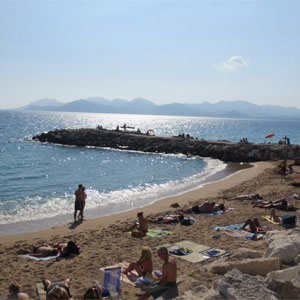
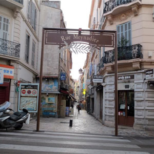
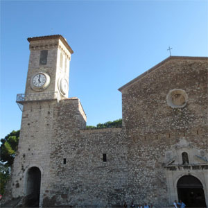
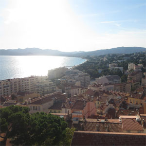

An American in Paris
Orientation in the South of France: Cannes
Before Paris, I spent two weeks in Cannes with my study abroad program. We began our trip here so we could have the opportunity to brush up on our French before moving to Paris for the Fall semester. We stayed at the International University of Cannes, where we were able to meet other foreign students studying abroad. We enjoyed the beach, short day trips throughout the South of France, and fine dining.
Below are some of my favorite pictures from Cannes. Cannes is a very small town, it is possible to walk the whole length in a day. For that reason, it is also fun to take some day trips. While I was in Cannes, we visited Eze, Monaco, and St. Honorat Island.
|
 Beautiful Cannes Beach our school was located on.  Rue Meynadier, one of Cannes' best shopping streets. |
 Le Suquet, Famous church and clocktower in the Old Town of Cannes.  View of Cannes from Le Suquet |